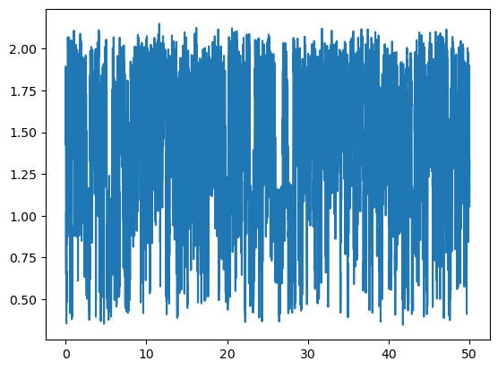
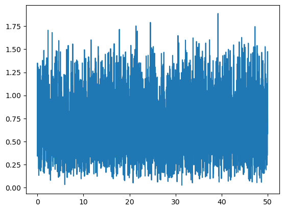
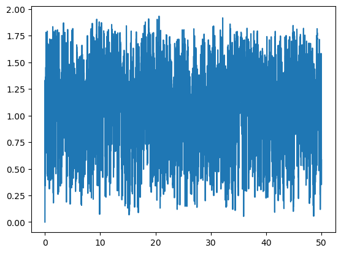
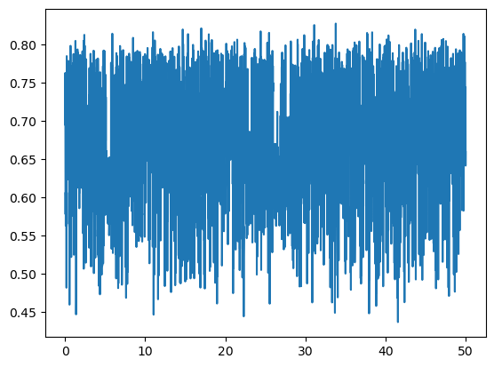

Get maximum distances#
MolSysMT includes a very versatile function to calculate distances between atoms of molecular systems, and/or centers of groups of atoms, and/or points in the coordinates space. The molsysmt.structure.get_distances() has many possibilities, that’s why one of the longest sections in MolSysMT documentation. But let’s go step by step.
import molsysmt as msm
from molsysmt import pyunitwizard as puw
import numpy as np
import matplotlib.pyplot as plt
The XYZ molecular system form#
The first case, and the most simple one, is getting distances from a points distribution in space. MolSysMT accepts a molecular system form where only spatial coordinates are described, with out topological information: the XYZ form.
molecular_system = np.zeros([6,3]) * puw.unit('nm')
msm.get_form(molecular_system)
'XYZ'
The XYZ form accepts numpy arrays with length units of the shape \([n\_structures, n\_atoms, 3]\) or \([n\_atoms, 3]\). In case of having an array of rank 2, MolSysMT always understands \(n\_structures=1\) and the first rank as the number of atoms:
msm.get(molecular_system, n_structures=True, n_atoms=True)
[1, 6]
Lets create a couple of XYZ molecular systems with more than a frame. These two systems will help us illustrate the firts distance calculations:
# Molecular system with three atoms and three structures.
molecular_system = np.zeros([3,4,3], dtype='float64') * puw.unit('nm')
## First atom
molecular_system[0,0,:] = [0, 2, -1] * puw.unit('nm')
molecular_system[1,0,:] = [1, 2, -1] * puw.unit('nm')
molecular_system[2,0,:] = [0, 2, -1] * puw.unit('nm')
## Second atom
molecular_system[0,1,:] = [-1, 1, 1] * puw.unit('nm')
molecular_system[1,1,:] = [-1, 0, 1] * puw.unit('nm')
molecular_system[2,1,:] = [0, 0, 1] * puw.unit('nm')
## Third atom
molecular_system[0,2,:] = [-2, 0, 1] * puw.unit('nm')
molecular_system[1,2,:] = [-2, 0, 0] * puw.unit('nm')
molecular_system[2,2,:] = [-1, 1, 0] * puw.unit('nm')
## Fourth atom
molecular_system[0,3,:] = [-2, -2, -2] * puw.unit('nm')
molecular_system[1,3,:] = [0, 0, 0] * puw.unit('nm')
molecular_system[2,3,:] = [2, 2, 2] * puw.unit('nm')
molecular_system
| Magnitude | [[[0.0 2.0 -1.0] |
|---|---|
| Units | nanometer |
msm.info(molecular_system)
| form | n_atoms | n_groups | n_components | n_chains | n_molecules | n_entities | n_structures |
|---|---|---|---|---|---|---|---|
| XYZ | 4 | None | None | None | None | None | 3 |
Distance between atoms in space#
Distance between atoms of a system#
The first case shows how to get the distance between all points of a system at every frame
distances = msm.structure.get_distances(molecular_system)
The result is an array of rank 3. Where the first axe or rank corresponds to the number of structures and the other two, the second and third axe, accounts for the point or atom indices:
distances.shape
(3, 4, 4)
This way every distance between atoms at each frame is stored. Lets print out the distance between the 0-th and the 2-th atom at frame 1-th:
print('Distance at frame 1-th between atoms 0-th and 2-th: {}'.format(distances[1,0,2]))
Distance at frame 1-th between atoms 0-th and 2-th: 3.7416573867739413 nanometer
If only the distance between atoms 0-th and 2-th at every frame is required, there is no need to compute \(n\_atoms x n\_atoms\) distances. The input arguments selection and selection_2 help us to define the range of elements of the output distance matrix:
distances = msm.structure.get_distances(molecular_system, selection=0, selection_2=2)
This time the output is an array of rank 3 with shape \([3,1,1]\). The distance for just a pair of atoms was computed for three structures:
distances.shape
(3, 1, 1)
for ii in range(3):
print('Distance at frame {}-th between atoms 0-th and 2-th: {}'.format(ii,distances[ii,0,0]))
Distance at frame 0-th between atoms 0-th and 2-th: 3.4641016151377544 nanometer
Distance at frame 1-th between atoms 0-th and 2-th: 3.7416573867739413 nanometer
Distance at frame 2-th between atoms 0-th and 2-th: 1.7320508075688772 nanometer
Lets try now to get the distance between the atom 1-th and the atoms 0-th and 2-th at every frame:
distances = msm.structure.get_distances(molecular_system, selection=1, selection_2=[0,2])
As you will guess, the output matrix is an array of rank three this time with shape \([3,1,2]\):
distances.shape
(3, 1, 2)
If we want now to print out the distance between atoms 1-th and 2-th for frame 0-th:
print('Distance at frame 0-th between atoms 1-th and 2-th: {}'.format(distances[0,0,1]))
Distance at frame 0-th between atoms 1-th and 2-th: 1.4142135623730951 nanometer
The position of each atom in lists selection and selection_2 is used to locate the corresponding distance in the output array. If instead, you want to use the original atom indices to locate a distance, the input argument output_form='dict' can help:
distances = msm.structure.get_distances(molecular_system, selection=1, selection_2=[0,2], output='dict')
This way the output is no longer a numpy array of rank 3, the output object is now a dictionary of dictionaries of dictionaries. Where the set keys of the first dictionary corresponds to the atom indices of selection_1:
distances
| Magnitude | [[[2.449489742783178 1.4142135623730951]] |
|---|---|
| Units | nanometer |
distances.keys()
---------------------------------------------------------------------------
AttributeError Traceback (most recent call last)
File ~/micromamba/envs/docs/lib/python3.10/site-packages/pint/facets/numpy/quantity.py:229, in NumpyQuantity.__getattr__(self, item)
228 try:
--> 229 return getattr(self._magnitude, item)
230 except AttributeError:
AttributeError: 'numpy.ndarray' object has no attribute 'keys'
During handling of the above exception, another exception occurred:
AttributeError Traceback (most recent call last)
Cell In[20], line 1
----> 1 distances.keys()
File ~/micromamba/envs/docs/lib/python3.10/site-packages/pint/facets/numpy/quantity.py:231, in NumpyQuantity.__getattr__(self, item)
229 return getattr(self._magnitude, item)
230 except AttributeError:
--> 231 raise AttributeError(
232 "Neither Quantity object nor its magnitude ({}) "
233 "has attribute '{}'".format(self._magnitude, item)
234 )
AttributeError: Neither Quantity object nor its magnitude ([[[2.44948974 1.41421356]]
[[3.46410162 1.41421356]]
[[2.82842712 1.73205081]]]) has attribute 'keys'
The second nested dictionary has the atom indices of selection_2 as keys:
distances[1].keys()
dict_keys([0, 2])
And the third and last nested dictionary is defined with the frame indices as keys:
distances[1][2].keys()
dict_keys([0, 1, 2])
Thus, the distance now between atoms 0-th and 2-th in frame 1-th is:
print('Distance at frame 0-th between atoms 1-th and 2-th: {}'.format(distances[1][2][0]))
Distance at frame 0-th between atoms 1-th and 2-th: 1.4142135623730951 nanometer
Just like selection and selection_2 can limit the range of atom indices of the calculation, structure_indices can be used to define the list of structures where the method applies:
distances = msm.structure.get_distances(molecular_system, selection=1, selection_2=[0,2], structure_indices=[1,2])
print('Distance at frame 2-th between atoms 1-th and 2-th: {}'.format(distances[1,0,1]))
Distance at frame 2-th between atoms 1-th and 2-th: 1.7320508075688772 nanometer
You can check again that with output_form='dict' the original indics for atoms and structures work to locate a distance:
distances = msm.structure.get_distances(molecular_system, selection=1, selection_2=[0,2], structure_indices=[1,2], output='dict')
print('Distance at frame 2-th between atoms 1-th and 2-th: {}'.format(distances[1][2][2]))
Distance at frame 2-th between atoms 1-th and 2-th: 1.7320508075688772 nanometer
Distances between atoms positions in different structures#
At the end of last subsection we saw how, in addition to the input arguments selection and selection_2, the input arguments structure_indices and structure_indices_2 alter the way distances are computed. Lets use the four arguments in the next example to revisit their function:
distances = msm.structure.get_distances(molecular_system, selection=[1,2], structure_indices=[0,1],
selection_2=1, structure_indices_2=[1,2])
The distance between atoms 1-th and 2-th, and atom 1-th are computed. But, these distances are not between spatial positions in the same frame index. When two frame indices lists are provided by means of structure_indices and structure_indices_2, pairs of structures are taken sequentially. In this case positions of selection at frame 0-th are confronted againts positions of selection_2 at frame 1-th, and the results are stored in the first frame of the distances output. Then, according to the last cell frame indices, positions of selection at frame 1-th are confronted againts positions of selection_2 at frame 2-th. Thus, lets print out for example the distance between the position of atom 2-th of selection in frame 1-th and the position of atom 1-th of selection_2 in frame 2-th:
print('The distance between atom 2-th of selection at frame 1-th and atom 1-th of selection_2 at frame 2-th is: {}'.format(distances[1,1,0]))
The distance between atom 2-th of selection at frame 1-th and atom 1-th of selection_2 at frame 2-th is: 2.23606797749979 nanometer
In this case, when the output object is a dictionary of dictionaries of dictionaries, the last nested keys correspond to the frame indices in structure_indices. Lets compute de same distances as before printing out the same specific distance:
distances = msm.structure.get_distances(molecular_system, selection=[1,2], structure_indices=[0,1],
selection_2=1, structure_indices_2=[1,2], output='dict')
print('The distance between atom 2-th of selection at frame 1-th and atom 1-th of selection_2 at frame 2-th is: {}'.format(distances[2][1][1]))
The distance between atom 2-th of selection at frame 1-th and atom 1-th of selection_2 at frame 2-th is: 2.23606797749979 nanometer
The possibility to calculate distances between crossing frame indices opens the door to get displacement lengths as it is shown in next subsection.
Displacement distances of atoms#
When both input arguments structure_indices and structure_indices_2 are used over a unique set of atoms of the same molecular system, the distances computed acquired a simple physical meaning: displacements. Lets see the following case:
distances = msm.structure.get_distances(molecular_system, selection=1, structure_indices=[0,1], structure_indices_2=[1,2])
The shape of the output object is:
distances.shape
(2, 1, 1)
The length of the distance walked by atom 1-th between structures 0-th and 1-th is:
print('The displacement length of atom 1-th between structures 0-th and 1th is: {}'.format(distances[0,0,0]))
The displacement length of atom 1-th between structures 0-th and 1th is: 1.0 nanometer
While the displacement length of the same atom between the next two consecutive structures is:
print('The displacement length of atom 1-th between structures 1-th and 2-th is: {}'.format(distances[1,0,0]))
The displacement length of atom 1-th between structures 1-th and 2-th is: 1.0 nanometer
If we want to get the length distance an atom moves between a fixed frame, 0-th for instance, and the rest of structures we can invoke the command molsysmt.distance() this way:
distances = msm.structure.get_distances(molecular_system, selection=1, structure_indices=[0,1,2], structure_indices_2=[0,0,0],
output='dict')
The displacement length of atom 1-th between its position at frame 0-th and all other structures is:
for ii in range(3):
print('The displacement length of atom 1-th between structures 0-th and {}-th is: {}'.format(ii, distances[1][1][ii]))
The displacement length of atom 1-th between structures 0-th and 0-th is: 0.0 nanometer
The displacement length of atom 1-th between structures 0-th and 1-th is: 1.0 nanometer
The displacement length of atom 1-th between structures 0-th and 2-th is: 1.4142135623730951 nanometer
Distance between atoms pairs#
When the method molsysmt.distance() is invoked to calculate the distances between a set of \(N\) atoms of selection and a set of \(M\) atoms of selection_2, the result is an object, a numpy array or a dictionary, with \(N x M\) distances per frame. Sometimes all these different distances are not needed, but only those between specific atom pairs. These atom pairs can be given by the elements in selection and selection_2 coupled sequantially one to one. This option is activated when the input argument pairs=True:
distances = msm.structure.get_distances(molecular_system, selection=[0,0,1], selection_2=[1,2,2],
structure_indices=[1,2], pairs=True)
When pairs=True the shape of the output numpy array is \([n\_structures, N]\), where \(N\) is the number of pairs: [0,1], [0,2] and [1,2], in this case.
distances.shape
(2, 3)
Lets print out the distance between atoms 0-th and 2-th in frame 1-th:
print('The distance between the pair of atoms 0-th and 2-th in frame 1-th: {}'.format(distances[0,1]))
The distance between the pair of atoms 0-th and 2-th in frame 1-th: 3.7416573867739413 nanometer
The dictionary output form also works for atom pairs in the same way as with pairs=False:
distances = msm.structure.get_distances(molecular_system, selection=[0,0,1], selection_2=[1,2,2],
structure_indices=[1,2], pairs=True, output='dict')
print('The distance between the pair of atoms 0-th and 2-th in frame 1-th: {}'.format(distances[0][2][1]))
The distance between the pair of atoms 0-th and 2-th in frame 1-th: 3.7416573867739413 nanometer
Distance between atom groups in space#
Imagine the distance between geometric centers of atoms groups needs to be obtained. There is no reason why MolSysMT should have new functions to do that. Every method introduced in the previous section, about getting distances between atoms, has the possibility to do it over groups of atoms.
Distance between atom groups of a system#
Lets load a new molecular system to illustrate how molsysmt.distance() can get distances between atom groups:
molecular_system = msm.convert('1TCD', 'molsysmt.MolSys')
msm.info(molecular_system)
| form | n_atoms | n_groups | n_components | n_chains | n_molecules | n_entities | n_waters | n_proteins | n_structures |
|---|---|---|---|---|---|---|---|---|---|
| molsysmt.MolSys | 3983 | 662 | 167 | 4 | 167 | 2 | 165 | 2 | 1 |
Lets revisit how to get the distances between two atoms selections to start with, then the effect of input arguments group_behavior and group_behavior_2 will be shown:
distances = msm.structure.get_distances(molecular_system, selection="group_index==0", selection_2="group_index==1")
This molecular system has onle a single frame, so the shape of the output array is \([1, n\_atoms\_1, n\_atoms\_2]\) where \(n\_atoms\_1\) and \(n\_atoms\_2\) is the number of atoms in selection and selection_2, respectively:
n_atoms_1 = msm.get(molecular_system, element='atom', selection="group_index==0", n_atoms=True)
n_atoms_2 = msm.get(molecular_system, element='atom', selection="group_index==1", n_atoms=True)
print(n_atoms_1, n_atoms_2)
9 7
distances.shape
(1, 9, 7)
distances[0,5,5]
Now, lets use group_behavior="geometric_center" to obtain the distance between the geometric center of the set of atoms in selection to every atom in selection_2.
distances = msm.structure.get_distances(molecular_system, selection="group_index==0",
group_behavior="geometric_center",
selection_2="group_index==1")
distances.shape
(1, 1, 7)
And with group_behavior_2="geometric_center" the distance between both geometric centers can be obtain:
distances = msm.structure.get_distances(molecular_system, selection="group_index==0", group_behavior="geometric_center",
selection_2="group_index==1", group_behavior_2="geometric_center")
distances.shape
(1, 1, 1)
The input arguments group_behavior and group_behavior_2 allow us to work with a unique position of a group of atoms, either the geometric center or the center of mass. But what happens then if we have several groups of atoms? The arguments selection and selection_2 do work with just a list of atom indices or a selection sentence. Thats why we have to use two new input arguments: groups_of_atoms and groups_of_atoms_2. Lets define a couple of list of lists of atom indices to illustrate their use.
list_groups_1 = msm.get(molecular_system, element="group",
selection="group_index in [0,1,2,3]", atom_index=True)
list_groups_2 = msm.get(molecular_system, element="group",
selection="group_index in [4,5,6,7,8]", atom_index=True)
print(list_groups_1)
[array([0, 1, 2, 3, 4, 5, 6, 7, 8]) array([ 9, 10, 11, 12, 13, 14, 15])
array([16, 17, 18, 19, 20, 21, 22, 23, 24])
array([25, 26, 27, 28, 29, 30, 31])]
First, lets compute the distance between every single atom in selection to the geometric center of the atoms groups defined in list_groups_2:
distances = msm.structure.get_distances(molecular_system, selection="group_index==0",
groups_of_atoms_2=list_groups_2, group_behavior_2="geometric_center")
distances.shape
(1, 9, 5)
Now, the distance between the geometric center of the set of atoms in selection and every geometric center of the atoms groups given by list_groups_2:
distances = msm.structure.get_distances(molecular_system, selection="group_index==0",group_behavior="geometric_center",
groups_of_atoms_2=list_groups_2, group_behavior_2="geometric_center")
distances.shape
(1, 1, 5)
And finnally, the distance between every geometric center of the atoms groups in list_groups_1 to every geometric center of the atoms groups defined in list_groups_2:
distances = msm.structure.get_distances(molecular_system, groups_of_atoms=list_groups_1, group_behavior="geometric_center",
groups_of_atoms_2=list_groups_2, group_behavior_2="geometric_center")
distances.shape
(1, 4, 5)
distances[0,2,2]
Just like with atoms, if only a list of atoms groups is used, the distance between its centers is obtained:
distances = msm.structure.get_distances(molecular_system, groups_of_atoms=list_groups_1, group_behavior="geometric_center")
distances.shape
(1, 4, 4)
Finnally, lets proof that the distance between groups can be computed all along a trajectory as well as only at specific structures. Lets load the whole trajectory ‘pentalanine.h5’:
molecular_system = msm.demo['pentalanine']['traj.h5']
molecular_system = msm.convert(molecular_system, to_form='molsysmt.MolSys')
msm.info(molecular_system)
| form | n_atoms | n_groups | n_components | n_chains | n_molecules | n_entities | n_peptides | n_structures |
|---|---|---|---|---|---|---|---|---|
| molsysmt.MolSys | 62 | 7 | 1 | 1 | 1 | 1 | 1 | 5000 |
msm.info(molecular_system, element='group')
| index | id | name | type | n atoms | component index | chain index | molecule index | molecule type | entity index | entity name |
|---|---|---|---|---|---|---|---|---|---|---|
| 0 | 1 | ACE | terminal capping | 6 | 0 | 0 | 0 | peptide | 0 | Peptide_0 |
| 1 | 2 | ALA | aminoacid | 10 | 0 | 0 | 0 | peptide | 0 | Peptide_0 |
| 2 | 3 | ALA | aminoacid | 10 | 0 | 0 | 0 | peptide | 0 | Peptide_0 |
| 3 | 4 | ALA | aminoacid | 10 | 0 | 0 | 0 | peptide | 0 | Peptide_0 |
| 4 | 5 | ALA | aminoacid | 10 | 0 | 0 | 0 | peptide | 0 | Peptide_0 |
| 5 | 6 | ALA | aminoacid | 10 | 0 | 0 | 0 | peptide | 0 | Peptide_0 |
| 6 | 7 | NME | terminal capping | 6 | 0 | 0 | 0 | peptide | 0 | Peptide_0 |
Lets represent the distance between the geometric center of the terminal groups vs. the simulation time:
distances = msm.structure.get_distances(molecular_system, selection="group_index==0", group_behavior="geometric_center",
selection_2="group_index==6", group_behavior_2="geometric_center")
times = msm.get(molecular_system, element="system", time=True)
plt.plot(puw.convert(times, 'nanoseconds'), distances[:,0,0])
plt.show()
/home/diego/Myopt/miniconda3/envs/MolSysMT@dprada_3.9/lib/python3.9/site-packages/matplotlib/cbook/__init__.py:1298: UnitStrippedWarning: The unit of the quantity is stripped when downcasting to ndarray.
return np.asarray(x, float)

Or lets just get the distance between the geometric centers of all residues at the 3000-th frame:
list_groups_1 = msm.get(molecular_system, element="group", selection="all", atom_index=True)
distances = msm.structure.get_distances(molecular_system, groups_of_atoms=list_groups_1, group_behavior="geometric_center",
structure_indices=3000)
distances.shape
(1, 7, 7)
print("The distance between geometric_center of group 2-th and group 4-th at frame 3000-th is: {}".format(distances[0,2,4]))
The distance between geometric_center of group 2-th and group 4-th at frame 3000-th is: 0.6818505282832528 nanometer
Distances between atom groups positions in different structures#
The method molsysmt.distance() works with atom groups just like with only atoms. There are two input arguments to select the coordinates of a set of atoms at two different structures:
molecular_system = msm.demo['pentalanine']['traj.h5']
molecular_system = msm.convert(molecular_system, to_form='molsysmt.MolSys')
msm.info(molecular_system)
| form | n_atoms | n_groups | n_components | n_chains | n_molecules | n_entities | n_peptides | n_structures |
|---|---|---|---|---|---|---|---|---|
| molsysmt.MolSys | 62 | 7 | 1 | 1 | 1 | 1 | 1 | 5000 |
Let see how structure_indices_1 and structure_indices_2 works in this context:
distances = msm.structure.get_distances(molecular_system,
selection="group_index==0", group_behavior="geometric_center",
structure_indices=100,
selection_2="group_index==6", group_behavior_2="geometric_center",
structure_indices_2=200)
distances.shape
(1, 1, 1)
The physical meaning of this former example is clear but not really useful, unless selection is the same as selection_2 as we can see in the following section.
Displacement distances of atom groups#
The possibility to get the distance between the coordinates of an object at two different structures makes the obtention of atom groups displacements straightforward. Lets plot the distance walked by the 0-th group of the former pentalanine peptide between consecutive structures of the trajectory store in pentalanine.h5:
molecular_system = msm.demo['pentalanine']['traj.h5']
molecular_system = msm.convert(molecular_system, to_form='molsysmt.MolSys')
n_structures = msm.get(molecular_system, n_structures=True)
all_structure_indices = np.arange(n_structures)
displacements = msm.structure.get_distances(molecular_system, selection="group_index==0", group_behavior="geometric_center",
structure_indices=all_structure_indices[:-1], structure_indices_2=all_structure_indices[1:])
time = msm.get(molecular_system, element='system', structure_indices=all_structure_indices[:-1], time=True)
plt.plot(puw.convert(time,'ns'), displacements[:,0,0])
plt.show()
/home/diego/Myopt/miniconda3/envs/MolSysMT@dprada_3.9/lib/python3.9/site-packages/matplotlib/cbook/__init__.py:1298: UnitStrippedWarning: The unit of the quantity is stripped when downcasting to ndarray.
return np.asarray(x, float)

Or we can, for instance, get the distance of the center of mass of the whole molecule from the initial configuration to every time step along the trajectory:
displacements = msm.structure.get_distances(molecular_system, selection="all",
structure_indices=np.zeros(n_structures, dtype=int), structure_indices_2=all_structure_indices)
displacements[1000,30,30]
time = msm.get(molecular_system, element='system', time=True)
plt.plot(puw.convert(time, 'ns'), displacements[:,0,0])
plt.show()

Distance between pairs of groups of atoms#
Lets see the following example where all distances betweeen the geometric center of the residues of pentalanine is computed along a short trajectory:
molecular_system = msm.demo['pentalanine']['traj.h5']
molecular_system = msm.convert(molecular_system, to_form='molsysmt.MolSys')
list_atom_groups = msm.get(molecular_system, element='group', selection='all', atom_index=True)
list_atom_groups
array([array([0, 1, 2, 3, 4, 5]),
array([ 6, 7, 8, 9, 10, 11, 12, 13, 14, 15]),
array([16, 17, 18, 19, 20, 21, 22, 23, 24, 25]),
array([26, 27, 28, 29, 30, 31, 32, 33, 34, 35]),
array([36, 37, 38, 39, 40, 41, 42, 43, 44, 45]),
array([46, 47, 48, 49, 50, 51, 52, 53, 54, 55]),
array([56, 57, 58, 59, 60, 61])], dtype=object)
distances = msm.structure.get_distances(molecular_system, groups_of_atoms=list_atom_groups,
group_behavior='geometric_center')
distances.shape
(5000, 7, 7)
The method worked needlessly computing the distances between different groups twice, as well as getting the distance between a geometric center to the its self for every residue. This can be avoided thanks to the input argument pairs=True. Using pairs=True, as it can be seen in the corresponding section about distances of atoms pairs, the distances between atom groups pairs made by consecutive elements of two zipped lists are obtained. Lets see this with a pratical case:
from itertools import combinations
list_atom_groups_1=[]
list_atom_groups_2=[]
aux_list_1=[]
aux_list_2=[]
for ii,jj in combinations(range(7), 2):
print('{}.vs.{}'.format(ii,jj))
aux_list_1.append(ii)
aux_list_2.append(jj)
list_atom_groups_1.append(list_atom_groups[ii])
list_atom_groups_2.append(list_atom_groups[jj])
0.vs.1
0.vs.2
0.vs.3
0.vs.4
0.vs.5
0.vs.6
1.vs.2
1.vs.3
1.vs.4
1.vs.5
1.vs.6
2.vs.3
2.vs.4
2.vs.5
2.vs.6
3.vs.4
3.vs.5
3.vs.6
4.vs.5
4.vs.6
5.vs.6
distances = msm.structure.get_distances(molecular_system, groups_of_atoms=list_atom_groups_1, group_behavior='geometric_center',
groups_of_atoms_2=list_atom_groups_2, group_behavior_2='geometric_center', pairs=True)
distances.shape
(5000, 21)
Lets plot the distance of a given pair, 12-th p.e., defined by the groups:
print('The 12-th pair is made by groups {}-th and {}-th, and its distance along the trajectory is:'.format(aux_list_1[12], aux_list_2[12]))
The 12-th pair is made by groups 2-th and 4-th, and its distance along the trajectory is:
time = msm.get(molecular_system, element='system', time=True)
plt.plot(puw.convert(time, 'ns'), distances[:,12])
plt.show()
/home/diego/Myopt/miniconda3/envs/MolSysMT@dprada_3.9/lib/python3.9/site-packages/matplotlib/cbook/__init__.py:1298: UnitStrippedWarning: The unit of the quantity is stripped when downcasting to ndarray.
return np.asarray(x, float)
